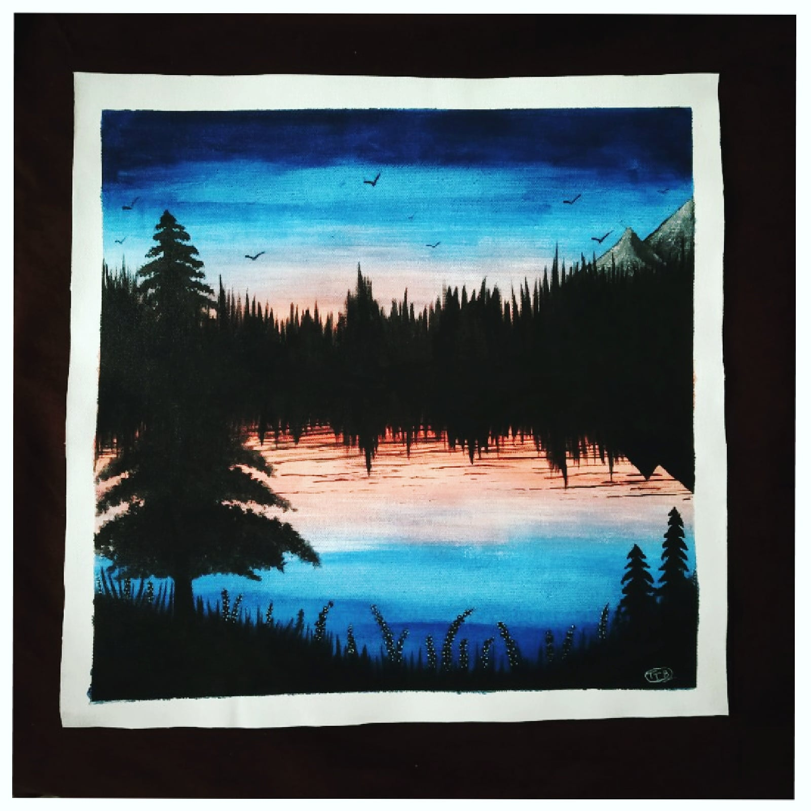

DAWN
In frame is a simple lanscape painting of nature showing the time of dawn.
Dawn (on Earth) is the time that marks the beginning of twilight before sunrise.
This morning twilight period will last until sunrise (when the Sun's upper limb breaks the horizon),
when direct sunlight outshines the diffused light.
The main message that this picture wants to give is one should
always leave behind all the bad memories of each day behind
and start with a fresh mind which will help the day to pass with positive energy and not negative energy.
Materials Required :
1 Canvas (16*16) inch.
paint brush.
dark blue,orange,black grey,white acrylic colours.
steps one can follow(if needed) :
First take a canvas and tape it if you want a border or give a wash to the whole canvas using a paint brush.
Give wash with dark blue from edge and gets lighter at the end and give a lighter wash of orange in the middle.
After that paint every tree or any object you want to include in black because it dawn that and things appear dark at that
time of the day when looked from a distance.
Then give a bit white dots to show small flowers from distance and let it dry well before framing it.